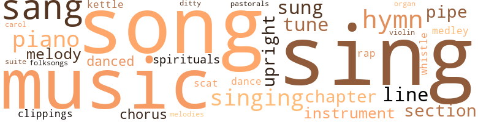
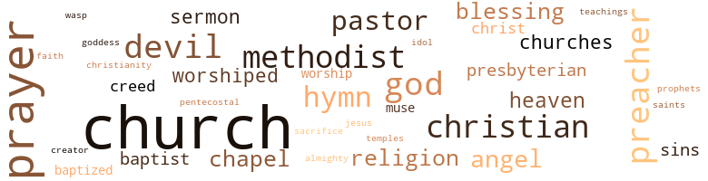

Run, Zebra, Run: A Story of American Race Conflict, by Harris, Leon R. (1959)
227 music-related terms matched in this text.
Most frequent terms in this topic: sing (35); music (26); sang (24); song (23); songs (10)
carol.n.01
Definition: joyful religious song celebrating the birth of Christ
| word | sentence |
|---|---|
| carol | He does n't want to sing a carol - he wants to sing a spiritual . |
chapter.n.01
Definition: a subdivision of a written work; usually numbered and titled
| word | sentence |
|---|---|
| chapter | Leonard took the card and read slowly , " ' Dear Leonard : Please find in your Bible , and read , the twenty-fourth , twenty-fifth , and twenty-sixth verses of the sixth chapter of Numbers , and be a good boy . ' " |
| chapter | Then her father read a long chapter in the Bible and commented on what he read . |
| chapter | But when she read a chapter from the Bible and mispronounced many simple words , and , after the Lord 's Prayer was repeated , the old man called her to him and asked her to allow Leonard to read for her the same chapter she had just read . |
| chapter | But when she read a chapter from the Bible and mispronounced many simple words , and , after the Lord 's Prayer was repeated , the old man called her to him and asked her to allow Leonard to read for her the same chapter she had just read . |
| chapters | Also , he was so well acquainted with his Bible he recited chapters as he read , just as Leonard recited the Psalms he had memorized . |
chorus.n.01
Definition: any utterance produced simultaneously by a group
| word | sentence |
|---|---|
| chorus | Spontaneously , all of them sang the chorus . |
| chorus | Between the chorus and the second verse Abner remarked , " My boy , you 're getting music out of that old organ I did n't know was in it . " |
| chorus | Soon every voice was repeating the chorus . |
clipping.n.01
Definition: an excerpt cut from a newspaper or magazine
| word | sentence |
|---|---|
| clippings | She suffered physically , even in her youth , for every now and then she inserted in her scrapbook clippings of prescriptions recommended to cure the headache and the backache and other ailments . |
| clippings | While he was reading it he could not help but feel sorry for the one whose slender fingers had cut out the clippings . |
dance.n.01
Definition: an artistic form of nonverbal communication
| word | sentence |
|---|---|
| dance | The weird cross-lights of the bonfires , fanned by the night wind , flickering on this mass of moving limbs , bodies and heads , makes the scene appear like some grotesque witches ' dance . |
dance.v.03
Definition: skip, leap, or move up and down or sideways
| word | sentence |
|---|---|
| dance | " Ca n't you dance for us ? " the chubby man inquired . |
| danced | As dancing was considered a sin , and no one in the community danced but a few sinners and the " poor trash , " white and black , it is certain the girl would have forgotten the art entirely had it not been for Leonard and the piano in the Harker parlor . |
| danced | Lucy danced with the tray she was carrying , set it down , threw her arms around her grandmother , and exclaimed , " Gran ' maw , just think . |
| danced | They went out that night and danced for an hour together , something they had not done since the night they were invited to a little party at a teacher 's home in Tuskegee . |
ditty.n.01
Definition: a short simple song (or the words of a poem intended to be sung)
| word | sentence |
|---|---|
| ditty | In the kitchen , Molly was singing a simple ditty he had taught her . |
folk_song.n.01
Definition: a song that is traditionally sung by the common people of a region and forms part of their culture
| word | sentence |
|---|---|
| folksongs | His tongue , thus loosened , could not be stilled , and he sang other songs - carols , hymns , and folksongs . |
hymn.n.01
Definition: a song of praise (to God or to a saint or to a nation)
| word | sentence |
|---|---|
| hymn | Then they sang two verses of a hymn and everyone repeated a verse from the Bible . |
| hymns | After listening to many lengthy hymns and prayers , he arose and requested the privilege to preach to them . |
| hymns | Sybil played the organ and two hymns were sung . |
| hymn | While the hymn was being sung he offered Eva his hymnbook . |
| hymn | But he knew , before he looked , that she had ceased singing an old church hymn and the churn dasher was being operated slower . |
| hymn | He turned the pages of the old hymn-book at random and , no matter what the hymn , its music burst forth sweeter than it had ever been given to the world before . |
| hymns | He never heard the mournful hymns or the lengthy prayers and sermons . |
| hymns | Gladys played , and they sang together some of the hymns they all knew and loved . |
| hymn | He sang the hymn of his Alma Mater as fervently as any of his classmates . |
| hymns | His tongue , thus loosened , could not be stilled , and he sang other songs - carols , hymns , and folksongs . |
| hymn | From his wide-opened mouth was rolling the music of an old church hymn he had joined in singing the night before . |
kettle.n.04
Definition: a large hemispherical brass or copper percussion instrument with a drumhead that can be tuned by adjusting the tension on it
| word | sentence |
|---|---|
| kettles | The last week 's run of the sugar-water was boiled down into thick syrup and retained in the huge kettles , ready for a little more boiling on the night of the party and then to be poured out into greased plates to harden as sugar . |
| kettle | Halldau had the white-papered partition installed because , he explained , " I ca n't eat right when I can see the kitchen stove and hear the kettle boiling . " |
medley.n.01
Definition: a musical composition consisting of a series of songs or other musical pieces from various sources
| word | sentence |
|---|---|
| medley | Then was heard a medley of gasps and screams and shrieks - all the noises a group of young , excited girls can make . |
| medley | His prayer brought a medley of groans , moans , sniffles , whoops , and " Amens . " |
music.n.01
Definition: an artistic form of auditory communication incorporating instrumental or vocal tones in a structured and continuous manner
| word | sentence |
|---|---|
| music | His report cards presented a line of perfect P 's and high 90 's - he won most of the small prizes offered for good work - on Friday afternoons he would recite the longest speeches , and when all the first-graders assembled in the music class , which met once a week , his was the voice that rang out the loudest and never missed a note . |
| music | Above the rumble of the train was heard the soft melody - music as sweet as the tinkling of chiming bells . |
| music | " Well , his father was that music master I told you about . |
| music | Sometimes he would sit on a jutting rock and sing , and the music from his throat would please him when he heard it there . |
| music | He was really living again , living as he desired to live ; a happy hour of soul music and soul beauty . |
| music | For there is no music as sweet as the mingled voices of children , and there is no work of art more beautiful than the smile on the face of a child . |
| music | Between the chorus and the second verse Abner remarked , " My boy , you 're getting music out of that old organ I did n't know was in it . " |
| music | The sweet music of the slave songs made him remember all that had been noble in his life and made him forget all that had been sinful . |
| music | " Cawn yuh play some chu ' ch music on that ? " |
| music | How , when angry , she seemed to bite a piece off her every word , but when thoughtful and content , how her voice sounded like music made by little silver bells - like the rippling water of Pigeon River flowing over one of the numerous shallows . |
| music | It was a simple , maiden 's song she sang , and the music , the words , the girl , and the surroundings seemed to merge into a perfect adaptableness . |
| music | But there was cleanliness and brightness and cheerfulness and even music within the First National Bank . |
| music | He turned the pages of the old hymn-book at random and , no matter what the hymn , its music burst forth sweeter than it had ever been given to the world before . |
| music | He had unlocked the door and entered it , content again to live with his angels of music who had nurtured him so fondly in times past . |
| music | Through the door , slightly left ajar , the music rolled - out of the yard - out the gate - out onto the pike . |
| music | Soon the yard was full of people - mostly young people - young people who know what real music is - whose hearts have not yet been hardened by life 's discordant dins . |
| music | It was Sunday afternoon when Leonard arrived at Tuskegee - a warm and pleasant afternoon - and the band was giving a concert of sacred music on the lawn in front of Alabama Hall . |
| music | From attic to cellar , the mansion was filled to overflowing with his music . |
| music | We around here who can afford to pay the price want you to teach your wonderful music to our youngsters . |
| music | He was Jaques Wilhelm Halldau , and this was his STUDIO of music . |
| Music | Music was a part of his very soul , and when he taught music his soul was free - free in its own sphere - free to associate and harmonize with other souls the great goddess drew together . |
| music | Music was a part of his very soul , and when he taught music his soul was free - free in its own sphere - free to associate and harmonize with other souls the great goddess drew together . |
| music | He had told Catherine that Europe had made him a master of music . |
| music | That a French sea captain and his wife had heard the sweet music rolling from his throat as he lay on the white sand of the beach , near the harbor , had taken him home with them , and their generosity had provided for him ? |
| music | He discovered immediately that she had no desire to study music or to be taught music . |
| music | He discovered immediately that she had no desire to study music or to be taught music . |
| music | From his wide-opened mouth was rolling the music of an old church hymn he had joined in singing the night before . |
musical_instrument.n.01
Definition: any of various devices or contrivances that can be used to produce musical tones or sounds
| word | sentence |
|---|---|
| instrument | When Sybil left for the Seminary in Lexington , where she was to attend school , he took her place at the instrument Sunday mornings at family prayers , and one bitter cold day that winter he played at church services because no one else was there who could do it . |
| instrument | She quickly arose from the bench , and soon Leonard 's agile fingers were pressing the keys of the little organ , and a tone as strange as the tune of the new song was issuing from the instrument 's throat . |
| instrument | At sight of the little instrument the stranger suddenly stood erect . |
| instruments | He requested his instruments and went to work . |
organ.n.05
Definition: wind instrument whose sound is produced by means of pipes arranged in sets supplied with air from a bellows and controlled from a large complex musical keyboard
| word | sentence |
|---|---|
| organ | The white Methodist preacher , pastor of the largest church in Bridgeville , was present that night and invited him to play the offertory on the pipe organ at his church , at the coming Sunday morning service . |
pastorale.n.01
Definition: a musical composition that evokes rural life
| word | sentence |
|---|---|
| pastorals | He played from memory compositions he thought he had forgotten - hard , intricate , classical compositions of the old masters - waltzes , schottisches , pastorals , love songs . |
piano.n.01
Definition: a keyboard instrument that is played by depressing keys that cause hammers to strike tuned strings and produce sounds
| word | sentence |
|---|---|
| piano | Too , during the rainy days that spring and summer , Sybil , who had been taking music lessons for several years , began teaching him to play the piano . |
| piano | As dancing was considered a sin , and no one in the community danced but a few sinners and the " poor trash , " white and black , it is certain the girl would have forgotten the art entirely had it not been for Leonard and the piano in the Harker parlor . |
| piano | When Leonard entered the sitting room at supper time she saw him and sprang from the piano stool . |
| piano | He was happy to find here the finest and the sweetest-toned grand piano he had discovered in Bridgeville , and he played better than Bridgeville had ever heard him play . |
| piano | His eyes brightened , suddenly he shook his head , turned and faced the piano and said calmly , " Now I must sing . " |
| piano | " Say , " he said , " I own an empty four-room cottage down the street a ways and I 'm ordering a grand piano set in there tomorrow . |
| piano | He could play the piano and sing like a lark . |
| piano | She arose from the piano bench . |
| piano | Molly was sitting at the end of his piano in his own rocking chair . |
pipe.n.04
Definition: a tubular wind instrument
| word | sentence |
|---|---|
| pipe | He filled his cob pipe and picked up a live coal with his bare fingers and laid it on top of the tobacco , and Leonard watched the live coal as it became redder with each inhalation . |
| pipe | Around eight o'clock that Monday night when Sarah went out to church , she left her husband sitting by the fire smoking his cob pipe and reading a week-old paper he had picked up in some basement where he tended the furnace . |
| pipe | The white Methodist preacher , pastor of the largest church in Bridgeville , was present that night and invited him to play the offertory on the pipe organ at his church , at the coming Sunday morning service . |
| pipe | He found it - in the pipe mill " quarters . " |
| pipe | He applied for a job in the pipe mill and told the employment officer he was a machinist . |
rap.n.05
Definition: genre of African-American music of the 1980s and 1990s in which rhyming lyrics are chanted to a musical accompaniment; several forms of rap have emerged
| word | sentence |
|---|---|
| rap | A sharp rap on the front door silenced the porter 's song . |
| rap | Promptly at ten minutes to nine , Joe responded to another sharp rap on the front door and admitted the bank 's employees . |
scat.n.01
Definition: singing jazz; the singer substitutes nonsense syllables for the words of the song and tries to sound like a musical instrument
| word | sentence |
|---|---|
| Scat | Some of her friends , neighbors , and visitors went so far as to nickname the little one Scat . |
| Scat | They would inquire , " How 's little Scat this morning , Aunt Mary ? " or , " Has Scat started to teethin ' yet ? " |
section.n.01
Definition: a self-contained part of a larger composition (written or musical)
| word | sentence |
|---|---|
| section | Jute moved to Tuckertown but held onto his job transporting the mail and hauling supplies from the depot to the little country stores in that section of Blank County . |
| section | Far and wide it was known as the largest and best sugar camp in that section of Kentucky . |
| section | Cousin Effie 's bungalow was far from the heart of the city , in a section of Covington which is now a wealthy , exclusive district No other residence was nearer than half a block of it . |
| section | He boarded another streetcar and started for the rear end of it - the Negro section - then suddenly came to himself and sat down where he was . |
| section | Nicholas Leeder , a lawyer who seldom appeared before a bar of justice , a businessman who seemed to mix in all the business carried on in his section of the state , a good orator , a good bass singer , and a good Presbyterian , was admired by his friends who Spoke of him as the honorable Mr. Leeder , and was soundly hated by his enemies who called him " Slick Nick . " |
sing.v.02
Definition: produce tones with the voice
| word | sentence |
|---|---|
| sing | She could laugh and sing louder than anyone Leonard had ever heard , and , all the time she was washing in the basement , the entire Home would ring with her songs . |
| sing | I ca n't sing any better than I could when I was ten . |
| sing | I 'll expect you to play and sing my favorite song for me for my Christmas present . |
| sang | Then they sang two verses of a hymn and everyone repeated a verse from the Bible . |
| sing | " Well , can you sing ? " |
| sung | Christmas was not long past , and the first song that popped into Leonard 's head was one the children at the Home had learned and sung for Santa Claus . |
| sing | Without any hesitation whatever , his strong young voice rang out : Hear the children laugh and sing ; Santa Claus comes today : Oh , the presents he will bring ; Santa Claus comes today . |
| sing | Hear the children laugh and sing ; While the merry echoes ring : Waiting for the coming , coming King ; Santa Claus comes today . |
| sang | When he sang the last verse : Do you know his other name ; Santa Claus , comes today : Call him Love , it 's just the same ; Santa Claus comes today . |
| sang | He sang two other songs for them , and then , feeling hungry , took one of the apples from the sack and began to eat , and his admirers returned to their seats . |
| sang | He said a dozen pieces that day and sang a half-dozen songs for them . |
| sung | Sybil played the organ and two hymns were sung . |
| sang | That summer Leonard sang more than he had ever sung in his life . |
| sung | That summer Leonard sang more than he had ever sung in his life . |
| sing | Sometimes he would sit on a jutting rock and sing , and the music from his throat would please him when he heard it there . |
| sung | Here , between the circuit rider and the choir , the Methodist religion was preached , prayed , sung , and testified into his soul in copious and regular doses . |
| sang | He prayed with the pray-ers , sang with the singers , and preached with the preachers . |
| sang | Barber preached , prayed , and sang as no man had ever done before , not in that church . |
| sang | He sat with the other children - sang and prayed with them - took his turn at reading the missionary lesson , and spoke his piece if he was on the program . |
| singing | But he knew , before he looked , that she had ceased singing an old church hymn and the churn dasher was being operated slower . |
| sing | Then , turning to Leonard , he asked , " Can you sing , young fellow ? " |
| sing | But I ca n't sing much . " |
| sang | Spontaneously , all of them sang the chorus . |
| sang | Then Leonard stepped up close to the organ and he and Gladys sang the verses together . |
| sing | " You sing fine , Leonard . |
| sing | Let 's hear you sing something by yourself . |
| sing | Now when I was a young fellow , I 'd rather sing than eat a good meal 's vittles , but my voice is gettin ' sort o ' cracked now . '' |
| sing | " No , it is n't , Mr. Jones , " remonstrated Leonard , realizing that Abner Jones 's voice would bring credit to any choir he had heard sing in Blank County . |
| sing | " You sing mighty well , " he continued . |
| sing | " I hope I 'll be able to sing that well when I 'm as old as you are . " |
| sing | " Do n't you ever sing in the choir ? " |
| sing | " I 'll sing this one if you 'll play for me , Gladys . " |
| sang | He played and sang two other songs , then Jones said he had to get back to the mill . |
| sing | And ca n't he sing ! |
| sang | She sang low as she combed and braided her hair . |
| sing | We 'll have him play and sing some as soon as he 's rested a little . " |
| sang | He played and sang for nearly half an hour . |
| sing | He could sing like a lark , and had an abundance of nerve . |
| sang | A few yards down the river , on a branch of a small tree above the water , a red cardinal sat and sang . |
| sing | And all that saved him , in later years , from despair and degradation were the Psalms he memorized while attending the little Presbyterian Sunday school in Bridgeville , and the spirituals he learned to sing at Tuskegee . |
| sing | Sarah intended to sing her " favorite song , " but she could not sing . |
| sing | Sarah intended to sing her " favorite song , " but she could not sing . |
| Sing | Sing it , Bernice , " he requested . |
| sang | It was a simple , maiden 's song she sang , and the music , the words , the girl , and the surroundings seemed to merge into a perfect adaptableness . |
| sing | That night the principal requested someone to sing a spiritual . |
| sang | The singer seemed to forget his surroundings , the thousand pairs of eyes , and he threw back his head and sang . |
| sang | He knew the man in the coffin so well - so much better than those who sang and prayed and preached and mourned . |
| sang | He sang some of the beautiful spirituals he had learned and Mrs. Jones said they were certainly " sweet an ' mournful . '' |
| sang | Gladys played , and they sang together some of the hymns they all knew and loved . |
| sang | They sang as they had sung once before - before their heaven had been turned to hell . |
| sung | They sang as they had sung once before - before their heaven had been turned to hell . |
| sang | They sang - and , perhaps , forgot . |
| sang | He sang the hymn of his Alma Mater as fervently as any of his classmates . |
| sing | He does n't want to sing a carol - he wants to sing a spiritual . |
| sing | He does n't want to sing a carol - he wants to sing a spiritual . |
| sing | His eyes brightened , suddenly he shook his head , turned and faced the piano and said calmly , " Now I must sing . " |
| sang | His tongue , thus loosened , could not be stilled , and he sang other songs - carols , hymns , and folksongs . |
| sang | He sang it from memory - every verse and word - and his voice grew husky . |
| sing | He could play the piano and sing like a lark . |
| sing | He thought of the song he had heard them sing : Po ' niggah - po ' niggah - Wo ' k th ' hardes ' - eat th ' wust : Po ' niggah - po niggah - Git tuh bed las ' - git hup fust ! |
| sing | Another pupil arrived , a muscular young man who wanted to learn to play the violin and sing bass . |
| sing | Alice cooked the best meals he had ever eaten and she told him his songs were the sweetest she had ever heard him sing . |
| sing | Then , one afternoon , she asked him to sing for her . |
| sing | He had consistently refused to sing in the studio for anyone except Molly . |
| singing | In the kitchen , Molly was singing a simple ditty he had taught her . |
| sing | " Sit down - Mister Jaques , " she commanded , " and sing for me . " |
| sing | " Come sing . |
| Sing | Sing for me ! " |
| singing | He was singing his third song when Molly appeared at the door . |
| singing | From his wide-opened mouth was rolling the music of an old church hymn he had joined in singing the night before . |
singing.n.01
Definition: the act of singing vocal music
| word | sentence |
|---|---|
| singing | I love to listen to the teacher 's songs and singing but not to her instructions . |
| singing | It sounded so much better than when he was singing in the house before company . |
| singing | She was singing : My Lawd , what a mornin ' , W'en th ' stars begin to fall , and appeared to be more interested in the morning and the falling stars than in her husband 's tobacco supply . |
| singing | Leonard unsaddled Hal , and , as he turned to Pearl , they heard Sybil coming down the path , singing . |
| singing | Within a week , he was humming , whistling , and singing only spirituals . |
song.n.01
Definition: a short musical composition with words
| word | sentence |
|---|---|
| songs | She could laugh and sing louder than anyone Leonard had ever heard , and , all the time she was washing in the basement , the entire Home would ring with her songs . |
| songs | I love to listen to the teacher 's songs and singing but not to her instructions . |
| song | I 'll expect you to play and sing my favorite song for me for my Christmas present . |
| song | " Give us a song then . " |
| song | Christmas was not long past , and the first song that popped into Leonard 's head was one the children at the Home had learned and sung for Santa Claus . |
| songs | He sang two other songs for them , and then , feeling hungry , took one of the apples from the sack and began to eat , and his admirers returned to their seats . |
| songs | He said a dozen pieces that day and sang a half-dozen songs for them . |
| song | He tried to be agreeable and never refused to play a new song for them or tell them a new story he had read . |
| song | When the meal was finished all returned to the sitting room and Abner requested a song . |
| song | Gladys sat down at the little organ and started playing a church song . |
| song | Their voices blended perfectly - the Spirit of Music united their hearts , happiness and contentment filled them to overflowing - and , when the song was finished , the mother was smiling through her tears . |
| song | She quickly arose from the bench , and soon Leonard 's agile fingers were pressing the keys of the little organ , and a tone as strange as the tune of the new song was issuing from the instrument 's throat . |
| songs | He played and sang two other songs , then Jones said he had to get back to the mill . |
| song | Git 'em while they 're fresh - git 'em while they 're good - git 'em while I got 'em - know you 'd git 'em if you could : ' The song of the " pie man " was heard in the distances-the pie man who brought , every night after chapel , supreme and satisfaction to those hungry students fortunate enough have a nickel or a dime to pay for his wares , but untold misery and disappointment to all not so fortunate . |
| songs | The sweet music of the slave songs made him remember all that had been noble in his life and made him forget all that had been sinful . |
| song | " Have you a book and a favorite song ? " he inquired . |
| song | Sarah intended to sing her " favorite song , " but she could not sing . |
| song | It was a simple , maiden 's song she sang , and the music , the words , the girl , and the surroundings seemed to merge into a perfect adaptableness . |
| song | Before the song was finished his conscience ceased to trouble him and his tortured soul was at peace . |
| song | He made such a request quite often , and sometimes from the throat of a student fresh from a hidden plantation in the depths of the rural South would issue a song , strange and new , that would set the audience on fire . |
| song | A new song ! |
| song | Leonard was humming the song when he undressed for bed . |
| song | His visiting time was nearly spent before he told her about the song he had heard in the Old Barracks . |
| songs | He played from memory compositions he thought he had forgotten - hard , intricate , classical compositions of the old masters - waltzes , schottisches , pastorals , love songs . |
| song | High and low - low and high - sweeter and sweeter - nearer and nearer - until , into the heart of every mother and father , wife and husband , sweetheart and lover , girl and boy , nestled the three last words of his song - the sweetest words in any language - " I love you . " |
| songs | His tongue , thus loosened , could not be stilled , and he sang other songs - carols , hymns , and folksongs . |
| song | Then , while the grandfather 's clock in the hall ( which , by the way , was the present Brother Silas had told his niece would talk to her the rest of her life ) was striking the midnight hour , Van-alban whispered his request into the singer 's ear , and , stepping back , announced , " Friends , my favorite , and it 's his last song , ' Home , Sweet Home . ' " |
| song | He thought of the song he had heard them sing : Po ' niggah - po ' niggah - Wo ' k th ' hardes ' - eat th ' wust : Po ' niggah - po niggah - Git tuh bed las ' - git hup fust ! |
| songs | Alice cooked the best meals he had ever eaten and she told him his songs were the sweetest she had ever heard him sing . |
| song | She knew the song was one of his songs . |
| songs | She knew the song was one of his songs . |
| song | He was singing his third song when Molly appeared at the door . |
| song | A sharp rap on the front door silenced the porter 's song . |
spiritual.n.01
Definition: a kind of religious song originated by Blacks in the southern United States
| word | sentence |
|---|---|
| spirituals | Within a week , he was humming , whistling , and singing only spirituals . |
| spirituals | And all that saved him , in later years , from despair and degradation were the Psalms he memorized while attending the little Presbyterian Sunday school in Bridgeville , and the spirituals he learned to sing at Tuskegee . |
| spirituals | He sang some of the beautiful spirituals he had learned and Mrs. Jones said they were certainly " sweet an ' mournful . '' |
suite.n.01
Definition: a musical composition of several movements only loosely connected
| word | sentence |
|---|---|
| suite | For twenty-five years he had been a widower and a guest of the Midstate Hotel , where he occupied a suite of three rooms on the second floor . |
tune.n.01
Definition: a succession of notes forming a distinctive sequence
| word | sentence |
|---|---|
| line | His report cards presented a line of perfect P 's and high 90 's - he won most of the small prizes offered for good work - on Friday afternoons he would recite the longest speeches , and when all the first-graders assembled in the music class , which met once a week , his was the voice that rang out the loudest and never missed a note . |
| melody | Above the rumble of the train was heard the soft melody - music as sweet as the tinkling of chiming bells . |
| line | With the end of a slate pencil , they traced this line from Bridgeville to Columbus - then on to Cincinnati - then on to Tuckertown . |
| line | She placed her pencil on the crooked , zigzagged black line that was named in the book Pigeon River . |
| line | Her thin lips were just a line of delicate red . |
| lines | Take that fer yer smart-alecky talk , " and before he could drop the lines the back of the old lady 's hand struck him hard in the center of the face . |
| tune | She quickly arose from the bench , and soon Leonard 's agile fingers were pressing the keys of the little organ , and a tone as strange as the tune of the new song was issuing from the instrument 's throat . |
| tune | She had prayed , testified , wept , and shook hands with everybody , and , returning , she entered her humble home humming a new revival tune , while in her heart was a staunch resolution to do all within her power to bring to the mourner 's bench , and to the Master , the two poor , lost sinners residing beneath her own roof , Slim and Molly . |
| line | In a little while he was doing just what they were doing - fighting the dirt out of his room to keep from being disgraced by having his name read out in the dining hall , standing in line at the bathroom door every Saturday night , always running wherever he had to go , to classes , drill , chapel , work , or meals , and " swapping " neckties , shirts , hats , and socks . |
| melody | An instant - and from the throat of that little organ , sitting in the comer of that dimly lighted room in the barnlike house " under the hill " on Cuyler pike - rolled forth a melody the like of which the listeners had never heard . |
| melody | Perfect melody - intoxicating melody - soothing melody - its sweetness wafted them instantly away from their lowly worlds into the region of the spirits . |
| melody | Perfect melody - intoxicating melody - soothing melody - its sweetness wafted them instantly away from their lowly worlds into the region of the spirits . |
| tune | She laid her head on his shoulder and started humming a tune he had never heard . |
| tune | There was silence - silence - silence - and then a low , deep hum - " H 'm - h 'm - h 'm - h 'm - m - m - m - m. " A tune was rising in some throat , in the throat of a very black boy who occupied a bench with the C Prep class , the lowest grade in the school . |
| melodies | The eyes , the ears , the hands of a genius were ordering tones and melodies to suit his own soul . |
| tune | The boy only grunted when Leonard spoke to him , but a mournful , melancholy tune emanated from his throat as soon as the visitor Was out of sight . |
| tune | Leonard 's quick ear caught the tune and also the words : Oh I got nobody - ee - ee - ee - ee , Fo ' to tell mah troubles to - oo - oo - oo . |
upright.n.02
Definition: a piano with a vertical sounding board
| word | sentence |
|---|---|
| uprights | The back part of the woodshed was built of inch boards nailed onto uprights . |
| uprights | These uprights were set two feet apart . |
| upright | He was a valuable member , faithful , pious , and upright . |
| upright | She was sitting there then - that night , that happy night - when she rubbed his last kiss off her cheek onto the front of his pajama coat , then sat upright , looked into his eyes and smiled . |
| upright | Suddenly , she raised her head , rubbed her eyes with her handkerchief , and sat upright . |
violin.n.01
Definition: bowed stringed instrument that is the highest member of the violin family; this instrument has four strings and a hollow body and an unfretted fingerboard and is played with a bow
| word | sentence |
|---|---|
| violin | Another pupil arrived , a muscular young man who wanted to learn to play the violin and sing bass . |
whistle.v.01
Definition: make whistling sounds
| word | sentence |
|---|---|
| whistle | She held him there until the whistle of a locomotive sounded in the distance . |
| whistle | The hall clock chimed the noon hour and at the same moment the whistle of Bridgeville 's one big industrial plant - the rollin ' mill - blew a long , coarse blast . |
whistle.v.05
Definition: make a whining, ringing, or whistling sound
| word | sentence |
|---|---|
| sung | While the hymn was being sung he offered Eva his hymnbook . |
227 violence-related terms matched in this text.
Most frequent terms in this topic: pike (19); hate (18); kill (16); spite (14); hurt (14)
aggravation.n.02
Definition: unfriendly behavior that causes anger or resentment
| word | sentence |
|---|---|
| provocation | No matter what the provocation he was not expected to strike back , not even to talk back . |
alcoholism.n.01
Definition: habitual intoxication; prolonged and excessive intake of alcoholic drinks leading to a breakdown in health and an addiction to alcohol such that abrupt deprivation leads to severe withdrawal symptoms
| word | sentence |
|---|---|
| alcoholism | that he had also become what he was when she first met him - a victim of alcoholism - unable to break the chains gay Paris had forged and entwined around him ? |
anger.n.01
Definition: a strong emotion; a feeling that is oriented toward some real or supposed grievance
| word | sentence |
|---|---|
| Anger | Anger was in the man 's voice - more than anger , bitter hate . |
| anger | Anger was in the man 's voice - more than anger , bitter hate . |
| anger | Leonard 's anger mounted , but he said nothing . |
| anger | Her face reddened with anger . |
| anger | The patriarch shook with anger . |
bird_shot.n.01
Definition: small lead shot for shotgun shells
| word | sentence |
|---|---|
| buckshot | Got a-playin ' roun ' on the sly with some o ' the white gals up McCoomer ways , an ' one night some un give him a load o ' buckshot . |
blast.v.03
Definition: use explosives on
| word | sentence |
|---|---|
| shelled | The womenfolk and the children shelled the corn . |
bridle.v.01
Definition: anger or take offense
| word | sentence |
|---|---|
| bridle | When they reached the barn he showed Leonard how to bridle Ben and also how any horse was hitched to a buggy . |
| bridled | " I 'll think about it , " he said , and George bridled and saddled his horse and rode away . |
| bridled | Then Leonard went to the barn , fed and curried and bridled a young sister of Pearl 's , and rode away , carrying his grief with him and leaving the family with theirs . |
bruise.n.01
Definition: an injury that doesn't break the skin but results in some discoloration
| word | sentence |
|---|---|
| bruises | There was a slight fracture of the skull , a broken arm , and numerous cuts and bruises . |
contemn.v.01
Definition: look down on with disdain
| word | sentence |
|---|---|
| despised | The colored people of the community despised him , as it was common knowledge that the had filched about half of the land he owned from an old colored woman , the grandmother of most of the inhabitants of Little Cuba . |
| scorn | In spite of their scorn and insults , he had refrained from striking back - even from " talking back " to them . |
| despised | He wanted to feel that he despised them - all of them . |
| despised | He wanted to feel that he despised the Harker blood and everyone through whose veins it coursed . |
draw.v.23
Definition: pull (a person) apart with four horses tied to his extremities, so as to execute him
| word | sentence |
|---|---|
| drawn | After he had gotten inside , and the bearskin was tucked snugly around his feet , and the many laprobes and the buffalo robe were drawn up over his legs , he said to the boy , '' Now you be good and mind Mrs. Harker while I 'm gone . |
| drew | He drew up his old frame to its full height , and twenty years or more seemed to roll off his shoulders . |
envy.n.01
Definition: a feeling of grudging admiration and desire to have something that is possessed by another
| word | sentence |
|---|---|
| envy | Jealousy and envy arose in the hearts of all the children , grandchildren , and great-grandchildren of the family . |
erase.v.01
Definition: remove from memory or existence
| word | sentence |
|---|---|
| erased | No matter how he looked , no matter how well he dressed , no matter how much he knew , the mark had been placed upon his forehead and could not be erased . |
| erase | He had viewed the scenes of his turbulent young life and wished he could erase all but a few of them from his memory . |
fight.n.05
Definition: a boxing or wrestling match
| word | sentence |
|---|---|
| fight | It 's a long time till election , and , too , I 'll have a fight for the nomination . |
| fight | A fight ! |
| fight | From now on , they 'll treat me white or fight , I do n't care which . |
| fight | How difficult the fight ! |
fight.v.02
Definition: fight against or resist strongly
| word | sentence |
|---|---|
| fight | " You should have come straight home from school , Frank , and not stopped to fight . |
| fight | The well-to-do who knew him respected him because he was shrewd enough to drive a hard bargain and was ambitious enough to fight for anything he desired . |
| fighting | Now do n't get to fighting over it . |
| fight | He noticed how cruel they were to each other , how they would quarrel and fight . |
| fought | They fought the Baptists in the community as hard as they fought the sinners . |
| fought | They fought the Baptists in the community as hard as they fought the sinners . |
| fought | Jeff 's father had enlisted in the northern armies and fought throughout the Civil War . |
| fight | He grabbed the wrist above the fingers which were about to release another rock and said , " Drop it and fight fair , if you want to fight . |
| fight | He grabbed the wrist above the fingers which were about to release another rock and said , " Drop it and fight fair , if you want to fight . |
| fighting | What are you boys fighting about ? |
| fought | And he learned that Judy Harker had a brother who fought with the Yankees , and none of her family had visited him or spoken to him since the close of the Civil War . |
| fighting | In a little while he was doing just what they were doing - fighting the dirt out of his room to keep from being disgraced by having his name read out in the dining hall , standing in line at the bathroom door every Saturday night , always running wherever he had to go , to classes , drill , chapel , work , or meals , and " swapping " neckties , shirts , hats , and socks . |
| fighting | They buried a Christian who was not a hypocrite , who was always honest a fighting man who fought a white man who was ground might have known What interest did he have in them anyhow ? |
| fought | They buried a Christian who was not a hypocrite , who was always honest a fighting man who fought a white man who was ground might have known What interest did he have in them anyhow ? |
| fight | The most ignorant colored person , though living in the depths of the South , though poor and wretched and hardly human , even such a colored person as that would fight anybody or anything - a white man or a circle saw - about his children . |
| fight | I ca n't fight off my disease . |
| fighting | He ran into two drunks fighting on a corner and returned disgusted to his hotel . |
| fight | Harriet and Marcella attend school together and will fight for each other at the drop of a pin . |
fit.n.01
Definition: a display of bad temper
| word | sentence |
|---|---|
| tantrums | Why , ' Lizabeth , she has regular tantrums . |
fracture.n.01
Definition: breaking of hard tissue such as bone
| word | sentence |
|---|---|
| fracture | There was a slight fracture of the skull , a broken arm , and numerous cuts and bruises . |
fury.n.01
Definition: a feeling of intense anger
| word | sentence |
|---|---|
| rage | When marbles became the rage , Elwood gave Leonard half of his , even to his shiny " taw . " |
| rage | Leonard was wild with rage when the mother and grandmother pulled him off his victim and almost dragged him into the house . |
| fury | The moment he felt the first sharp sting of the limb , he jumped onto the old lady with the fury of a wildcat , wrapped his supple legs around her body , and sank his teeth into her arm . |
| fury | Young Vanalban turned on him with the fury of a lion . |
gag.v.06
Definition: cause to retch or choke
| word | sentence |
|---|---|
| choking | They were choking him . |
| choking | Her clean white shoes were dusty - the din of the mill had her eardrums roaring - the gases from the furnaces and cupolas were half choking her . |
hate.n.01
Definition: the emotion of intense dislike; a feeling of dislike so strong that it demands action
| word | sentence |
|---|---|
| hate | But Condor Street held a monopoly on the real life of Bridgeville ; on most of her joy and sorrow ; on most of her pleasure and pain ; on most of her wealth and poverty ; on most of her literacy and ignorance ; on most of her love and hate . |
| hate | Anger was in the man 's voice - more than anger , bitter hate . |
| hate | These reflections awoke the spirit of hate long asleep in his heart , and almost instantly he became a new person . |
| hate | To be made the victim of such abominable treachery replenished the fires of hate already burning in his breast . |
| hate | Leonard Hall , twenty-one , went promptly to the devil , the creator of that spirit of hate which had taken possession of him . |
| hate | He was a purveyor of hate and ruin to every white who fell for his false friendship - to every white he could betray . |
| hate | She had taught him to conquer hate ; and he had overcome the world . |
hate.v.01
Definition: dislike intensely; feel antipathy or aversion towards
| word | sentence |
|---|---|
| hate | They say they live to be a hundred , but I hate the noisy , nasty things . " |
| hate | I 'd hate to have to teach any little niggers . |
| hated | Of all those who insulted him , and who were near his own age , Lee Jackson was the most hated because he was simply the most insulting . |
| hated | She hated alcohol and its effects . |
| hated | His decision pleased Leonard because he hated housework and was glad of the opportunity to get out into the fields and live as a country boy should live . |
| hate | What on earth did those poor folks ever do to you that makes you hate them so ? " |
| hated | Carrying the sugar-water up and down the rocky hillside was no easy task , but Leonard liked it because he hated dishwashing . |
| hate | No wonder that though the Harkers did everything to make him hate them , he never , never could hate their sugar camp or the state they called their home - old Kentucky ! |
| hate | No wonder that though the Harkers did everything to make him hate them , he never , never could hate their sugar camp or the state they called their home - old Kentucky ! |
| hated | She had always hated him . |
| hate | " Gladys , we hate it - your mother and me . |
| hate | We hate it , we do . |
| hated | No one could call them that hated name . |
| hated | He had never hated that stigma . |
| hate | Then why should he hate it ? |
| hate | He could no more hate it than he could hate himself . |
| hate | He could no more hate it than he could hate himself . |
| hated | They hated him because he bore the stigma , because he possessed a few drops of Negro blood . |
| hate | Do not hate . |
| hated | He hated the stuff . |
| Hate | Hate and sin - and now , physical pain and disappointment had calloused his very soul . |
| hated | Nicholas Leeder , a lawyer who seldom appeared before a bar of justice , a businessman who seemed to mix in all the business carried on in his section of the state , a good orator , a good bass singer , and a good Presbyterian , was admired by his friends who Spoke of him as the honorable Mr. Leeder , and was soundly hated by his enemies who called him " Slick Nick . " |
hostility.n.02
Definition: a state of deep-seated ill-will
| word | sentence |
|---|---|
| enmity | There was perpetual enmity and strife between the " first " children , whose mother was of good family , and the " second " children , whose mother was not of good family . |
| enmity | Now he was living in a new world where there was love , and more peace than confusion ; more honor than dishonor ; more friendliness than enmity ; more sympathy than disdain . |
hurt.v.04
Definition: cause damage or affect negatively
| word | sentence |
|---|---|
| hurt | He remembered Leonard 's color and features and was afraid his new friend might be hurt by the plain talk circulating so freely . |
| hurt | The disappointment hurt her . |
injury.n.01
Definition: any physical damage to the body caused by violence or accident or fracture etc.
| word | sentence |
|---|---|
| harm | " Now , Judy , what harm is there in these children sitting there together . |
| hurt | " What for ? " asked the innocent child in a hurt tone . |
| hurt | Oh , what a hurt - what a bitter hurt ! |
| hurt | Oh , what a hurt - what a bitter hurt ! |
| hurt | The information hurt Leonard but he believed Bernice was lying . |
| hurt | He rose to his feet , angry and hurt , but she threw her arms around his legs and pulled him down again . |
| injuries | There are too many absences on account of minor injuries . |
| injury | Pay her the same as the white nurses , and issue an order that every colored employee injured , no matter how slight the injury , report to that nurse immediately . " |
| hurt | " Do n't wantta hurt yo ' feelin 's , but I ' se newab thought that ere Tyler war a white man . |
jab.n.02
Definition: a quick short straight punch
| word | sentence |
|---|---|
| jab | Holding a pencil very tightly , she would , when in the act of writing , jab at the paper she was writing on in a way that reminded Leonard of a chicken picking up grains of corn from the ground . |
jealousy.n.01
Definition: a feeling of jealous envy (especially of a rival)
| word | sentence |
|---|---|
| Jealousy | Jealousy and envy arose in the hearts of all the children , grandchildren , and great-grandchildren of the family . |
kick_back.v.02
Definition: spring back, as from a forceful thrust
| word | sentence |
|---|---|
| kicked | He hit Jay Harker on the head with a rock one day when Jay came home drunk and maliciously kicked over a bucket of fresh milk he had just set on the ground in the driveway of the barn . |
| kicking | Then he added boldly , " What are you kicking about ? |
| kicks | She even kicks and talks in her sleep . " |
| kicked | He had been made a Negro - had been kicked out of the white race by the kicks of nearly every white person with whom he had ever come in contact . |
| kicks | He had been made a Negro - had been kicked out of the white race by the kicks of nearly every white person with whom he had ever come in contact . |
| kick | He 'd kick her out in the streets tomorrow if he could . |
kill.v.10
Definition: cause the death of, without intention
| word | sentence |
|---|---|
| kill | Then , as he saw her coming toward him , he picked up his victim and dashed him to the ground as though he might have been an unclean animal , saying as he did so , " If I see you inside those gates again I 'll kill you . |
| killed | His father was killed by the kick of a wild colt he was breaking , hardly six months after his wedding day . |
| kill | The old man would allow no one to kill a squirrel in the sugar camp without obtaining special permission . |
| kill | He said he wanted the squirrels there so one would always be available for soup for a sick person , and , too , so the greedy hunters could n't kill all the squirrels in Blank County . |
| kill | That nigger 'll kill ' im ! " |
| kill | Keepin ' a passel o ' po ' houn ' dogs erroun ' to kill sheep an ' yer kai n't git a one o ' them to work fer you inymore fee a decent wage . |
| kill | They 'll kill you about these white girls . " |
| killed | That very night , a bunch of dogs got among the sheep and killed a dozen of them . |
| killed | The innocent creatures had not been killed by any habitual sheep-killing dogs . |
| kill | If you kill a couple of them we wo n't be bothered again . " |
| killed | He fell asleep ; fell out of the tree , and his rifle was discharged and killed him . |
| kill | For an hour he stood there in the snow leaning against the fence , deliberately planning how he would kill Jay Harker . |
| killed | His senses returned and he realized he had killed a man . |
| kill | " They 'll kill you sure if you do n't . |
| kill | He kept a bottle of " blisterin ' " - purloined from the horse stable - on hand all the time to kill the obnoxious " Knights of Labor " which infested the old wooden bedstead . |
| killing | They took him to the girl who loved him - loved him with a love as hot as fire , with a crazy , killing kind of love . |
| kill | Wal , we kill ' bout one o ' yer kin ' a day ' roun ' here . |
| kill | " Do n't kill me ! |
| kill | Please do n't kill me ! |
| kill | " No , I 'm not going to kill you . |
| killed | Ed 's George had been killed in action . |
killing.n.01
Definition: an event that causes someone to die
| word | sentence |
|---|---|
| killing | You 're not worth killing . |
killing.n.02
Definition: the act of terminating a life
| word | sentence |
|---|---|
| kill | Seems to me like changin ' beds so much this time o ' year would mos ' nigh kill yer . |
| kill | Seems to me like changin ' beds so much this time o ' year would mos ' nigh kill yer . |
knife.n.02
Definition: a weapon with a handle and blade with a sharp point
| word | sentence |
|---|---|
| knife | But her tongue was sharper than his sword or hunting knife , and her tongue he obeyed . |
| knife | Beside the pie pan was a tin spoon , a rusty knife with a yellow handle , and a fork just like the knife . |
| knife | Beside the pie pan was a tin spoon , a rusty knife with a yellow handle , and a fork just like the knife . |
| knife | Then he brought out his knife , and then his new pocketbook . |
| knife | Then , remembering his knife , marbles , and his new purse full of money , he felt for his possessions in the pockets of the trousers he wore the day before . |
| knife | He found the marbles and knife but the purse was gone . |
| knives | Leonard , peering through the window , saw Pearl 's father and brother cutting down the plants with the long-handled knives . |
| knife | His fingers gripped a knife in his pocket , and only his deep regard for Gladys and respect for her father 's house prevented him from cutting Bob Wilkins ' throat , then and there . |
| knife | Mary , the cook , still dressed like mid-January , to keep from catching her " death o ' col ' , " was wandering about over the yard with a tin bucket and a case knife in her hand . |
| knife | The girl took the knife and stooped for the plants . |
lynch.v.01
Definition: kill without legal sanction
| word | sentence |
|---|---|
| lynched | A priest in a " white " church - the editor and owner of a big " white " metropolitan daily - the pretty star in a " white " picture - a physician whose practice was limited to " white only " - even a white who had had a Negro lynched . |
malice.n.01
Definition: feeling a need to see others suffer
| word | sentence |
|---|---|
| spite | She was rather tall for her age , and possessed a natural and charming grace which was always visible , in spite of the outlandish dresses she was compelled to wear . |
| spite | However , in spite of all his efforts he could not bridge the His companions told he was what they were not . |
| spite | In spite of his belated start , he got there before she and George arrived . |
| spite | In spite of his family tree and lack of education , he was " delivering the goods , " the goods being a majority of the Democratic votes cast in the township . |
| spite | In spite of the hard thunderstorm , old Dr. Bellern called on old man Silas Harker that night . |
| spite | Gladys unfolded her handkerchief and flitted it over his face in spite of his protestations . |
| spite | In spite of their scorn and insults , he had refrained from striking back - even from " talking back " to them . |
| spite | In spite of the friendly atmosphere of his school , Catherine 's child was often solitary and friendless . |
| spite | How , when angry , In spite of the friendly atmosphere of his school , Catherine 's child was often solitary and friendless . |
| spite | In spite of his color and features , Tuskegee , now ready to graduate him , had made him pure American Negro . |
| spite | In spite of the fact that his wife was sick abed , and his stepmother was lying at the point of death with pneumonia , he hitched his horse to the buggy and drove to Blankton to confer with Judge Evan Merrill . |
| spite | In spite of his sorrow , he felt that he was living not in a sad , dreary , and evil world . |
| spite | They 'd happen anyhow , in spite of all we 'd think , say , or do . |
| spite | In spite of his rough and raw exterior , he was a friendly , though droll individual . |
murder.n.01
Definition: unlawful premeditated killing of a human being by a human being
| word | sentence |
|---|---|
| murder | The girl read murder in his eyes . |
| murder | Evidently , to him , the murder he thought he had committed was a matter of little moment . |
| murder | He knew that was murder and murderers were sometimes hung . |
| murder | He was where striking a white man was a crime akin to murder - if the one who struck was a Negro . |
murder.v.01
Definition: kill intentionally and with premeditation
| word | sentence |
|---|---|
| murdered | They had been murdered by a pack of half-starved curs and hounds . |
| murdered | The man he once thought he had murdered was looking better than he had ever seen him look . |
open_fire.v.01
Definition: start firing a weapon
| word | sentence |
|---|---|
| fired | Next door lived Mr. Lickenstreeter , who worked at the Home ; who milked the cows and raised the garden , and fired the boiler and cleaned the snow from the walks in the winter time . |
pain.v.02
Definition: cause emotional anguish or make miserable
| word | sentence |
|---|---|
| hurt | You wo n't let anything hurt him . |
| hurt | But no one noticed him at all , and the cold neglect pained his little heart as badly as the cold outside had hurt his toes and fingers . |
| hurt | The loss of Gladys hurt him worse than he had ever been hurt in his life . |
| hurt | " Mr. Silas , I 've been hurt . |
| hurt | I - I - I hurt him . " |
| hurt | " Nobody got hurt but a nigger . |
pike.n.04
Definition: medieval weapon consisting of a spearhead attached to a long pole or pikestaff; superseded by the bayonet
| word | sentence |
|---|---|
| pike | At the base of the hill was the winding Cuyler pike , a white road along the edge of which , here and there , were neat little cottages , farmhouses and large barns , and two or three whitewashed cabins , the roofs of which seemed to touch the ground . |
| pike | All the hillside down to the pike was the orchard - apple , peach , plum , cherry , and quince trees - and between the rows of trees were berry bushes and grapevines . |
| pike | Foun ' him lyin ' right by the side o ' the pike . |
| pike | As they moved slowly down the rocky pike Leonard held tightly to the seat . |
| pike | The barns were ail standing close beside the pike , and from the pike a narrow road led to the double doors or open shed of every barn . |
| pike | The barns were ail standing close beside the pike , and from the pike a narrow road led to the double doors or open shed of every barn . |
| pike | The rear of the house faced the pike . |
| pike | The colored school sat on the pike two miles from Brinkley , in the midst of a grove of hardwoods . |
| pike | The front yard was separated from it by a narrow lane which ran from the turnpike past the front of the house , then curved like a horseshoe and met the pike again below the barn . |
| pike | Thus , when one stood on the front porch , he could not see the pike or those who travelled on it . |
| pike | He had followed Sybil the " short way " to the church ; across Pigeon River on the ice then over the hill ; on across the snow-mantled fields ; through woods , little valleys and hollows , until they entered the pike at the Brinkley school , a quarter-mile from their destination . |
| pike | Ethel lived on the pike nearly a mile from the church . |
| pike | bareback , and in a minute was galloping up the pike . |
| pike | He had hunted and roamed all over the neighboring farms and knew just where he would enter the pike near her home . |
| pike | Afterward , he hitched Hal to the buggy and started up the lane toward the pike . |
| pike | The narrow pike beyond the Branch wound up and over Brackett 's Hill , and on the other side of the hill a lane extended across a fertile stretch of bottom land , then on to a little knoll , upon the brow of which sat the home of Abner Jones . |
| pike | Through the door , slightly left ajar , the music rolled - out of the yard - out the gate - out onto the pike . |
| pike | He rode on to Brinkley and returned in time to feed his mount and to see Silas Harker 's body carried from the house by his sons to the narrow hearse standing below on the pike . |
| pike | He touched her flank with the switch he held and she trotted up the - v hill to the pike . |
punch.n.01
Definition: (boxing) a blow with the fist
| word | sentence |
|---|---|
| punch | Suddenly , when they had come to a level stretch in the road , and the wagon was running smoothly , the driver introduced himself to Leonard by giving him a sharp punch in the ribs , exclaiming as he did so , " Scrach-ch ! " and quickly looking at him out of the corner of his eye . |
rape.n.03
Definition: the crime of forcing a woman to submit to sexual intercourse against her will
| word | sentence |
|---|---|
| assault | He knew the girl would be unprepared for hit assault . |
resentment.n.01
Definition: a feeling of deep and bitter anger and ill-will
| word | sentence |
|---|---|
| resentment | Suddenly , within him , a fountain of hot resentment began to bubble and boil . |
resist.v.04
Definition: withstand the force of something
| word | sentence |
|---|---|
| resist | Few sinners could resist his appeals . |
rifle.n.01
Definition: a shoulder firearm with a long barrel and a rifled bore
| word | sentence |
|---|---|
| rifle | He came with his rifle , his dog , and his cane . |
| rifle | He purchased a fine rifle for him , and kept him supplied with good warm clothing . |
| rifle | " Go to Brinkley and get some cartridges for your rifle and lay for them tonight , " he advised . |
| rifle | That night Leonard donned an abundance of clothes , cleaned and reloaded his rifle , and went to the sheep pasture . |
| rifle | How long he had been sitting there musing and dreaming he did not know , but suddenly the sharp report of a rifle broke the night 's stillness . |
| rifle | He looked and recognized Jay Harker , carrying a rifle in his hand . |
| rifle | Evidently thinking he was dead , he picked up Leonard 's rifle , which had fallen over the fence , removed a loaded cartridge from the chamber , and , taking the empty shell from his own rifle , inserted it into the boy 's . |
| rifle | Evidently thinking he was dead , he picked up Leonard 's rifle , which had fallen over the fence , removed a loaded cartridge from the chamber , and , taking the empty shell from his own rifle , inserted it into the boy 's . |
| rifle | He fell asleep ; fell out of the tree , and his rifle was discharged and killed him . |
| rifle | He could n't shoot him , for the report of the rifle would arouse the whole house and he feared the wails and the screams of the old lady . |
shoot.v.02
Definition: kill by firing a missile
| word | sentence |
|---|---|
| shoot | He could n't shoot him , for the report of the rifle would arouse the whole house and he feared the wails and the screams of the old lady . |
| shot | " I 've been shot , " Leonard told him , and showed the old man the holes where the leaden pellet had perforated his garments . |
sic.v.01
Definition: urge to attack someone
| word | sentence |
|---|---|
| set | He hit Jay Harker on the head with a rock one day when Jay came home drunk and maliciously kicked over a bucket of fresh milk he had just set on the ground in the driveway of the barn . |
| set | Even bloodhounds would be set on his trail , for there was a stockade in North Birmingham , and a pair or two of the animals were kept confined , there . |
slaughter.n.03
Definition: the savage and excessive killing of many people
| word | sentence |
|---|---|
| massacre | Leonard discovered the massacre early the next morning when he visited the flock . |
sting.n.03
Definition: a painful wound caused by the thrust of an insect's stinger into skin
| word | sentence |
|---|---|
| sting | Although it was a long time before he felt the sting of the hickory paddle , like the sword of Damocles it was ever swinging over his head , and , though young and brave , he was not foolhardy . |
| bite | Also , if seen by any of the other little Home boys , he knew a bite of the apple would be a sufficient bribe to silence the tattling tongue . |
| bite | " I ca n't eat a bite - nere a bite , " she whined and walked out into the kitchen . |
| bite | " I ca n't eat a bite - nere a bite , " she whined and walked out into the kitchen . |
| sting | The moment he felt the first sharp sting of the limb , he jumped onto the old lady with the fury of a wildcat , wrapped his supple legs around her body , and sank his teeth into her arm . |
strike.v.04
Definition: make a strategic, offensive, assault against an enemy, opponent, or a target
| word | sentence |
|---|---|
| strike | No matter what the provocation he was not expected to strike back , not even to talk back . |
sword.n.01
Definition: a cutting or thrusting weapon that has a long metal blade and a hilt with a hand guard
| word | sentence |
|---|---|
| sword | But her tongue was sharper than his sword or hunting knife , and her tongue he obeyed . |
| steel | Heat and smoke from the numerous blast furnaces , steel mills , and factories . |
| steel | It informed her that a large steel mill in Birmingham wished to employ a colored Industrial nurse , and she had been recommended for the position . |
| steel | Tom Block , the president 's son , recently graduated from Carnegie Tech and now assistant to the general manager , was having his own way around the steel mill at that time . |
thrashing.n.01
Definition: a sound defeat
| word | sentence |
|---|---|
| thrashing | The first few years Leonard lived with the Harkers , he usually received a sound thrashing following his every trip to the mill . |
| thrashing | Sooner or later , that thrashing was certain to ensue . |
| thrashing | And what boy would not take a sound thrashing rather than miss an opportunity to learn and practice such arts ? |
weapon.n.01
Definition: any instrument or instrumentality used in fighting or hunting
| word | sentence |
|---|---|
| weapon | In an instant the colored boy was in possession of the revolver and was rubbing the muzzle of the deadly weapon the white boy 's forehead . |
| weapon | He spat in the pale face and struck it between the eyes with the butt of the weapon . |
weather.v.01
Definition: face and withstand with courage
| word | sentence |
|---|---|
| brave | Although it was a long time before he felt the sting of the hickory paddle , like the sword of Damocles it was ever swinging over his head , and , though young and brave , he was not foolhardy . |
| brave | Both were brave - very brave . |
| brave | And , though he would not let on , down deep in his heart he admired the brave girl for expressing her opinion and forcing him to respect her wishes . |
whip.v.04
Definition: strike as if by whipping
| word | sentence |
|---|---|
| lashing | Then he could feel that thorny white locust branch again , lashing his back and shoulders , the day the old lady said she was " goin ' to take th ' hide off " him , and did it . |
wound.n.01
Definition: an injury to living tissue (especially an injury involving a cut or break in the skin)
| word | sentence |
|---|---|
| wound | The red trail wound on . |
| wound | The red trail wound on . |
| wound | The red trail wound on . |
| wound | The red trail wound on in Memphis - up rather close to the river - then back a few blocks . |
| wound | The red trail wound on , across Beale Street , then ended - in a pool of red blood . |
wrestle.v.01
Definition: combat to overcome an opposing tendency or force
| word | sentence |
|---|---|
| wrestle | There , he learned to wrestle , fight , shoot at a target , swim , and to do the hundred and one other things boys like to do , and will always learn to do before they become men or be sorry ever afterward . |
273 religion-related terms matched in this text.
Most frequent terms in this topic: church (59); prayer (18); God (14); preacher (13); prayers (12)
baptist.n.01
Definition: follower of Baptistic doctrines
| word | sentence |
|---|---|
| Baptists | They fought the Baptists in the community as hard as they fought the sinners . |
| Baptists | And then it was necessary to get ahead of the Brinkley Baptists , who also were planning for their revival . |
| Baptists | There sinners would mingle with the saints - Baptists with Methodists - blacks with whites - Democrats with Republicans . |
| Baptist | Would n't the old sister lay down that " foot-wash Baptist religion '' and " mess aroun ' " some if she knew who she was cooking for and who that pretty yellow housemaid was waiting on ? |
baptize.v.01
Definition: administer baptism to
| word | sentence |
|---|---|
| baptized | But he was not baptized the following Sunday morning with the other candidates . |
| baptized | They were married in the church where she had attended Sunday school and had been baptized . |
blessing.n.05
Definition: the act of praying for divine protection
| word | sentence |
|---|---|
| blessing | Then there was silence and a man asked a blessing . |
| blessing | The voice was solemn - the blessing was a real prayer - every word of it plainly uttered . |
| blessing | She was extremely anxious that her father should greet their little friends again and , in his jolly way , make them realize that he , and his family , were getting a bigger blessing by giving than they were getting in receiving . |
| blessing | Leonard always remembered that blessing . |
| blessings | " Lord , we are thankful for thy blessings . |
| blessings | Behind the veil a kindly Fate may bestow upon us lavish blessings , and we revel in ecstasy - behind the veil . |
| blessing | Sarah had received her blessing . |
chapel.n.01
Definition: a place of worship that has its own altar
| word | sentence |
|---|---|
| chapel | It was not until after chapel exercises at nine o'clock that the four met again in Number Nine . |
| chapel | Git 'em while they 're fresh - git 'em while they 're good - git 'em while I got 'em - know you 'd git 'em if you could : ' The song of the " pie man " was heard in the distances-the pie man who brought , every night after chapel , supreme and satisfaction to those hungry students fortunate enough have a nickel or a dime to pay for his wares , but untold misery and disappointment to all not so fortunate . |
| chapel | In a little while he was doing just what they were doing - fighting the dirt out of his room to keep from being disgraced by having his name read out in the dining hall , standing in line at the bathroom door every Saturday night , always running wherever he had to go , to classes , drill , chapel , work , or meals , and " swapping " neckties , shirts , hats , and socks . |
| chapel | It would be too bad for him if those shoes were not shined before chapel that evening . |
| chapel | He wrote a note to send to her during the supper hour , informing her he was asking permission to see her in the girl 's parlor that evening before chapel . |
| chapel | So he did n't get a chance to talk to her very much Commencement Day , only while they marching side by side between the library and the chapel . |
chapel_service.n.01
Definition: a service conducted in a place of worship that has its own altar
| word | sentence |
|---|---|
| chapel | Sunday night he attended the first chapel service of the new year . |
christendom.n.01
Definition: the collective body of Christians throughout the world and history (found predominantly in Europe and the Americas and Australia)
| word | sentence |
|---|---|
| Christianity | This spirit forced him , their son and grandson , to pit his intelligence against his companions ' ignorance ; his shrewdness against their cunning ; his talents against their mediocrity ; his Christianity against their Methodism . |
christian.n.01
Definition: a religious person who believes Jesus is the Christ and who is a member of a Christian denomination
| word | sentence |
|---|---|
| Christian | Are you a Christian ? " |
| Christians | There was only one way to do this , hold a big revival , convert sinners , reclaim backsliders , and renew the spiritual strength of lukewarm Christians . |
| Christians | When they arose from their knees they were Christians . |
| Christians | As the boy grew older and larger , he began to realize that there were many kinds of Christians . |
| Christian | The Number One Class Leader , old Uncle Tom Blueheart , was a perfect Christian . |
| Christian | Uncle Tom was really a Christian . |
| Christians | But some he knew were funny Christians - very funny Christians . |
| Christians | But some he knew were funny Christians - very funny Christians . |
| Christians | Instead , he sat on the end of the rear bench in the center aisle , and usually , had all the bench to himself , for the other Christians and Methodists would not sit near him . |
| Christians | Christians prayed long prayers in those days and , like Baal 's prophets , the longer they prayed the louder became their voices . |
| Christian | They buried a Christian who was not a hypocrite , who was always honest a fighting man who fought a white man who was ground might have known What interest did he have in them anyhow ? |
| Christians | That was why they were Christians and not just church members . |
| Christian | Suddenly he would appear in the Sunday school - in the Christian Endeavor meeting - or his voice would ring out so sweetly during the church service all eyes would turn toward him . |
church.n.02
Definition: a place for public (especially Christian) worship
| word | sentence |
|---|---|
| church | Both were giving more liberally to the church . |
| churches | Tuckerton , Kentucky , was one depot , two churches , one schoolhouse , two general stores , one turnpike , and perhaps a dozen homes . |
| church | " I am the pastor of Brother Harker 's church . |
| church | Then they pulled away and traveled on , between the rows of rail or stone fences , mile after mile , until they could see in the distance the spire of the church and numerous houses which seemed to be clustered around it . |
| church | He was more than fifty years old that Sunday morning when he entered the door of a little church in the hills and found the congregation awaiting the arrival of their pastor . |
| churches | He prayed for the churches and schools . |
| church | Their church was on a circuit , and the preacher came only every fourth Sunday . |
| church | For the church and the school . |
| church | The following Saturday and Sunday were " meeting days " and there were to be services in the church - the old man was at home . |
| church | Sunday night , after church , he visited Leonard 's room . |
| church | The Harkers , especially their womenfolk , were faithful to their church . |
| church | The church was the main topic of their conversation , the chief recipient of their voluminous prayers . |
| church | A female Harker might neglect and abuse her husband but she would never neglect or abuse her church . |
| church | They stuck to the Methodist creed in toto and obeyed the letter of every law , rule , and regulation of their church strictly . |
| church | That cold December afternoon when Leonard attended Sunday school the first time in the Brinkley church was , too , the first time in his life that " going to Sunday school " brought him more sorrow than joy . |
| church | He had followed Sybil the " short way " to the church ; across Pigeon River on the ice then over the hill ; on across the snow-mantled fields ; through woods , little valleys and hollows , until they entered the pike at the Brinkley school , a quarter-mile from their destination . |
| church | When the circuit-riding pastor , Brother Lasty , came on the fourth Sunday , Ben was hitched to the surrey and the entire family drove to church . |
| church | Leonard soon learned to drive , and it became his duty to hitch Ben to the Harker hitching post in front of the church and to help the occupants in and out of the conveyance . |
| church | He did not testify until after he joined the church . |
| church | He did not want to join the church because the members of it did not seem to want him . |
| church | A revived church and an increased membership would donate liberally . |
| churches | There were to be four of them , one in each of his churches . |
| church | The first was to be held in the Brinkley church , for this was the largest church on the circuit and the sinners were thickest in the Brinkley community . |
| churches | He was one of the first of the Kentucky " sanctificationists " who had their day among the Methodist churches during the early part of the present century . |
| church | Within a week the little church was crowded to the doors at every service . |
| church | Barber preached , prayed , and sang as no man had ever done before , not in that church . |
| church | He returned to his private pew and remained there until the invitation was extended to those who had been saved to unite with the church . |
| church | He was received into the church by himself . |
| church | After the boy joined the church , he became a full-fledged member of the Junior Missionary Society . |
| church | The members of this society were the young bluebloods of the church - the sons and daughters of the upper families - of the officers and most respected members . |
| church | To be a " Junior , " one had to be very faithful to all church obligations . |
| church | Ethel lived on the pike nearly a mile from the church . |
| church | It happened during another revival at the church . |
| church | But Hennesey did not like the Tuckertown Methodists , and had joined the Brinkley church when a young man . |
| church | His daughters had been brought up within the church and both were converted when children . |
| church | That night at the revival the church filled rapidly . |
| church | But he knew , before he looked , that she had ceased singing an old church hymn and the churn dasher was being operated slower . |
| church | Gladys sat down at the little organ and started playing a church song . |
| church | I 'll see you Sunday after church . |
| church | I wants you to keep th ' house , fur I 've got to go to church . " |
| church | The Joneses ' front porch was full of visiting friends and neighbors , for it was " church day " at Brackett 's . |
| church | Then the landlady and her lord salted down the dollars and dimes , wore good clothes , gave liberally to the church , and were recognized as the most prosperous " colored family " in Bridgeville . |
| church | Around eight o'clock that Monday night when Sarah went out to church , she left her husband sitting by the fire smoking his cob pipe and reading a week-old paper he had picked up in some basement where he tended the furnace . |
| church | It was late when Sarah returned from church . |
| church | He attended the little church at Brackett 's - just to be near Gladys - just to look into her eyes - just to worship her . |
| church | " I mean , evah b ' long to a church ? " |
| church | Immediately to Sarah came the thought of the coming revival , and with this thought the fact that no one of her church now in town was able to play the organ . |
| church | The white Methodist preacher , pastor of the largest church in Bridgeville , was present that night and invited him to play the offertory on the pipe organ at his church , at the coming Sunday morning service . |
| church | The white Methodist preacher , pastor of the largest church in Bridgeville , was present that night and invited him to play the offertory on the pipe organ at his church , at the coming Sunday morning service . |
| church | He would join a colored church , a colored lodge , colored clubs . |
| church | After church the choirmaster and members would congregate about him , would invite him into their organization and into their homes . |
| church | They were married in the church where she had attended Sunday school and had been baptized . |
| church | From his wide-opened mouth was rolling the music of an old church hymn he had joined in singing the night before . |
| church | For forty years he had been a medical missionary of his church , had labored faithfully in both foreign and home mission fields , and , still very active at sixty-five , had raised an awful rumpus when his church retired him . |
| church | For forty years he had been a medical missionary of his church , had labored faithfully in both foreign and home mission fields , and , still very active at sixty-five , had raised an awful rumpus when his church retired him . |
church.n.04
Definition: the body of people who attend or belong to a particular local church
| word | sentence |
|---|---|
| churches | Not the churches , the high school , or the lodge halls , for these were on Stubbins Avenue . |
| Church | Church membership imposed upon him various duties and obligations . |
| church | He had ridden his colt Pearl to the church that day . |
| church | For what the clever child learned at the mill he would never have learned at church . |
| church | I do n't belong to any church here . |
| church | Go to church ? " |
| church | Then he followed in the procession , on to the Methodist church , which was filled to overflowing . |
| church | He played every night that week at the little colored Methodist church . |
church_service.n.01
Definition: a service conducted in a house of worship
| word | sentence |
|---|---|
| church | When Sybil left for the Seminary in Lexington , where she was to attend school , he took her place at the instrument Sunday mornings at family prayers , and one bitter cold day that winter he played at church services because no one else was there who could do it . |
| church | Suddenly he would appear in the Sunday school - in the Christian Endeavor meeting - or his voice would ring out so sweetly during the church service all eyes would turn toward him . |
creed.n.01
Definition: any system of principles or beliefs
| word | sentence |
|---|---|
| creed | He never became a successful preacher because he would not be hidebound to any established creed . |
| creed | They stuck to the Methodist creed in toto and obeyed the letter of every law , rule , and regulation of their church strictly . |
| creed | That 's against my creed . |
curate.n.01
Definition: a person authorized to conduct religious worship
| word | sentence |
|---|---|
| pastor | " I am the pastor of Brother Harker 's church . |
| pastor | The pastor opened it and his eyes alighted on a small , square card on which something was written . |
| pastor | The pastor arose and shook hands with another man who had just come inside , then the two walked out together , and soon Leonard was left alone . |
| pastor | He was more than fifty years old that Sunday morning when he entered the door of a little church in the hills and found the congregation awaiting the arrival of their pastor . |
| pastor | When the circuit-riding pastor , Brother Lasty , came on the fourth Sunday , Ben was hitched to the surrey and the entire family drove to church . |
| pastor | The old man was a " local preacher " and sat in the pulpit beside the pastor . |
| pastor | It happened during the administration of Brother Robinson , who succeeded Brother Lasty as pastor . |
| pastor | The Juniors were supposed to be supervised by the pastor 's wife , or by her appointee , if she could not attend the meetings Juniors many years . |
| pastor | That very night the new pastor had discussed with his officers the advisability of employing some white girl to play for them until the meetin ' got started off right . |
| pastor | The white Methodist preacher , pastor of the largest church in Bridgeville , was present that night and invited him to play the offertory on the pipe organ at his church , at the coming Sunday morning service . |
eden.n.01
Definition: any place of complete bliss and delight and peace
| word | sentence |
|---|---|
| Heaven | Most of them believed that only Methodists would enter Heaven . |
| Heaven | Heaven and hell became real places to him , just like Bridgeville , Cincinnati , and Brinkley . |
| Heaven | If this stigma was to shut the door of friendship , of hope , of ambition , of opportunity - of love , yes , of Heaven itself - in his face , then something must be done about it . |
| heaven | They sang as they had sung once before - before their heaven had been turned to hell . |
| Heaven | He was in Heaven . |
| Heaven | Then Alice said she knew Heaven must be a wonderful place indeed , if she could be happier there than she was here with her baby and husband . |
god.n.03
Definition: a man of such superior qualities that he seems like a deity to other people
| word | sentence |
|---|---|
| God | He mentioned Jay by name , requesting his God to " make him see the error of his ways before it is eternally too late . " |
| God | She was able to pray to her God and shed tears of penitence one minute and apply a rod to the naked flesh of a helpless child , and laugh in ghoulish glee the minute following . |
| gods | At four , when school was dismissed , the shouts and laughter of the children could be heard as they came running to receive what , to their hungry little stomachs , was a virtual gift of the gods . |
| God | He believed he could serve his God much better with a full stomach than with an empty one . |
| God | He would also pray for him publicly , calling his name , and requesting the God he served to make him grow up to be an honest , upright , and Christian man . |
| God | When she testified in class meeting , she would always say she was " saved , sanctified , and kept by the power of God every moment of her life . " |
| God | Abner Jones prayed as though he was in the habit of talking with God and not to God . |
| God | Abner Jones prayed as though he was in the habit of talking with God and not to God . |
| God | Be as good as you can be and may God bless you always . " |
| God | God is letting her guide her son ! " |
| God | God is letting her guide her son ! " |
| God | Thank God she would never know her little one was branded with the great American stigma - a few drops of Negro blood . |
| God | " Thank God . " |
| God | " Thank God - my mother 's God - old man Harker 's God - your people 's God - the God that made me find you again . " |
| God | And more , he knew that this little prayer before each meal was really all that was linking him to God , and to the God-spirit in each individual . |
goddess.n.01
Definition: a female deity
| word | sentence |
|---|---|
| goddess | Music was a part of his very soul , and when he taught music his soul was free - free in its own sphere - free to associate and harmonize with other souls the great goddess drew together . |
godhead.n.01
Definition: terms referring to the Judeo-Christian God
| word | sentence |
|---|---|
| Almighty | That Almighty Power , which keeps the paths of life whereon we must tread so dark and unknown before us , was good to them that afternoon . |
| creator | Leonard Hall , twenty-one , went promptly to the devil , the creator of that spirit of hate which had taken possession of him . |
hymn.n.01
Definition: a song of praise (to God or to a saint or to a nation)
| word | sentence |
|---|---|
| hymn | Then they sang two verses of a hymn and everyone repeated a verse from the Bible . |
| hymns | After listening to many lengthy hymns and prayers , he arose and requested the privilege to preach to them . |
| hymns | Sybil played the organ and two hymns were sung . |
| hymn | While the hymn was being sung he offered Eva his hymnbook . |
| hymn | But he knew , before he looked , that she had ceased singing an old church hymn and the churn dasher was being operated slower . |
| hymn | He turned the pages of the old hymn-book at random and , no matter what the hymn , its music burst forth sweeter than it had ever been given to the world before . |
| hymns | He never heard the mournful hymns or the lengthy prayers and sermons . |
| hymns | Gladys played , and they sang together some of the hymns they all knew and loved . |
| hymn | He sang the hymn of his Alma Mater as fervently as any of his classmates . |
| hymns | His tongue , thus loosened , could not be stilled , and he sang other songs - carols , hymns , and folksongs . |
| hymn | From his wide-opened mouth was rolling the music of an old church hymn he had joined in singing the night before . |
idol.n.01
Definition: a material effigy that is worshipped
| word | sentence |
|---|---|
| idol | Beneath that white cover reposed the idol of his stomach - some yellow , sweet , and juicy lemon pie , or a thick , creamy sweet potato custard . |
jesus.n.01
Definition: a teacher and prophet born in Bethlehem and active in Nazareth; his life and sermons form the basis for Christianity (circa 4 BC - AD 29)
| word | sentence |
|---|---|
| Jesus | His precepts were those taught by Jesus Christ and lived by Him . |
messiah.n.01
Definition: any expected deliverer
| word | sentence |
|---|---|
| Christ | She would n't take an interest in Beulah Land an ' would n't give Christ a prayer . " |
| Christ | His precepts were those taught by Jesus Christ and lived by Him . |
| Christ | They talked about Christ and they talked about me - some of Phil 's people did . |
methodist.n.01
Definition: a follower of Wesleyanism as practiced by the Methodist Church
| word | sentence |
|---|---|
| Methodists | It was not a " meetin ' Sunday , " for the family were Methodists . |
| Methodists | The Harkers were Methodists , old-time , loyal , aggressive Methodists . |
| Methodists | The Harkers were Methodists , old-time , loyal , aggressive Methodists . |
| Methodists | Most of them believed that only Methodists would enter Heaven . |
| Methodist | They stuck to the Methodist creed in toto and obeyed the letter of every law , rule , and regulation of their church strictly . |
| Methodist | Following this conversation , Leonard became a parasitic member of the Brinkley Methodist Sunday school . |
| Methodist | Here , between the circuit rider and the choir , the Methodist religion was preached , prayed , sung , and testified into his soul in copious and regular doses . |
| Methodist | It was a little Methodist Junior Missionary whom he liked mighty well , who , like Mother Eve , held the tempting apple before his eyes , and he ate it - peeling , flesh , and core . |
| Methodists | Instead , he sat on the end of the rear bench in the center aisle , and usually , had all the bench to himself , for the other Christians and Methodists would not sit near him . |
| Methodists | But Hennesey did not like the Tuckertown Methodists , and had joined the Brinkley church when a young man . |
| Methodist | They were good girls and never failed to testify in class meetings , and , during revivals , sometimes would volunteer to pray , almost an unusual thing for a very young person to do , even in the Brinkley Methodist church . |
| Methodists | There sinners would mingle with the saints - Baptists with Methodists - blacks with whites - Democrats with Republicans . |
| Methodists | " Well , I know of a house out near where I live that some Methodists are trying to make a hospital out of . |
muse.n.01
Definition: in ancient Greek mythology any of 9 daughters of Zeus and Mnemosyne; protector of an art or science
| word | sentence |
|---|---|
| muse | He would muse and smile . |
| muse | He would muse and smile . |
pentecostal.n.01
Definition: any member of a Pentecostal religious body
| word | sentence |
|---|---|
| Pentecostal | Almanacs and religious tracts , patent medicine circulars and pieces of hymnbooks , old Cincinnati Enquirers and Pentecostal Heralds , storybooks and worn-out books of essays , grammars , and orations , a part of a huge dictionary , which began at the E 's and ended at the W 's , any piece of paper on which was printed a sentence that interested him was sure to be deposited in his library and cherished as the purest gold . |
prayer.n.01
Definition: the act of communicating with a deity (especially as a petition or in adoration or contrition or thanksgiving)
| word | sentence |
|---|---|
| prayers | But that night , when he said his prayers and went to bed , he was still hearing Mary , his grandma 's last words , " Bye-bye , honey . |
| prayers | You must be a good boy and remember to say your prayers and read your Bible every night . |
| prayer | You have read a great prayer . |
| prayers | After listening to many lengthy hymns and prayers , he arose and requested the privilege to preach to them . |
| prayer | The voice was solemn - the blessing was a real prayer - every word of it plainly uttered . |
| prayer | It was a fervent prayer , and , somehow or other , though he knew not why , the boy who heard it there on his knees felt much better when be arose . |
| prayer | It was a simple , childlike prayer , a prayer for her parents , for her brothers and sister * and all her relations . |
| prayer | It was a simple , childlike prayer , a prayer for her parents , for her brothers and sister * and all her relations . |
| prayers | It was almost a short edition of the prayers of her parents , but it was Sybil 's prayer . |
| prayer | It was almost a short edition of the prayers of her parents , but it was Sybil 's prayer . |
| prayers | He knew only two prayers , " Now I lay me , " and the " Lord 's ; Prayer . " |
| Prayer | He knew only two prayers , " Now I lay me , " and the " Lord 's ; Prayer . " |
| Prayer | He said the Lord 's Prayer aloud . |
| prayer | When he had finished , the old man said , " Leonard , that is all right this time , but you must learn to pray a prayer of your own . " |
| prayer | After each prayer , all said " Amen " together . |
| prayer | The old man prayed last - a long prayer full of feeling - and when the " praying time " was over , Leonard could think of nothing else in the world left to pray for . |
| prayer | Thtt evening at " praying time , " the one prayer was a short one and no scripture was read at all . |
| prayer | After each prayer , all said " Amen " together . |
| prayer | The old man prayed last - a long prayer full of feeling - and when the " praying time " was over , Leonard could think of nothing else in the world left to pray for . |
| prayer | That evening at " praying time , " the one prayer was a short one and no scripture was read at all . |
| Prayer | But when she read a chapter from the Bible and mispronounced many simple words , and , after the Lord 's Prayer was repeated , the old man called her to him and asked her to allow Leonard to read for her the same chapter she had just read . |
| prayers | When Sybil left for the Seminary in Lexington , where she was to attend school , he took her place at the instrument Sunday mornings at family prayers , and one bitter cold day that winter he played at church services because no one else was there who could do it . |
| prayers | When he wanted to pray , his childish prayers would ascend from some secluded hollow . |
| prayers | The church was the main topic of their conversation , the chief recipient of their voluminous prayers . |
| prayer | His prayer brought a medley of groans , moans , sniffles , whoops , and " Amens . " |
| prayer | His weekly prayer at the family altar on Sunday mornings had to be longer and more fervid . |
| prayers | Christians prayed long prayers in those days and , like Baal 's prophets , the longer they prayed the louder became their voices . |
| prayer | The prayer meeting had been wonderful , for a new minister had lately arrived and was getting ready to start a " revival meetin ' . '' |
| prayer | She would n't take an interest in Beulah Land an ' would n't give Christ a prayer . " |
| prayers | Silas Harker 's prayers had been answered . |
| prayers | He never heard the mournful hymns or the lengthy prayers and sermons . |
| prayers | Said he was tired an ' sleepy an ' got up an ' went to bed after we had prayers . |
| prayer | And more , he knew that this little prayer before each meal was really all that was linking him to God , and to the God-spirit in each individual . |
preacher.n.01
Definition: someone whose occupation is preaching the gospel
| word | sentence |
|---|---|
| preacher | He is also a preacher . |
| preacher | He never became a successful preacher because he would not be hidebound to any established creed . |
| preacher | Downstairs the three rooms were now the parlor , library , and a spare bedroom called " the preacher 's room . " |
| preacher | Their church was on a circuit , and the preacher came only every fourth Sunday . |
| preacher | Even when he was going away to hold a " protracted meeting " - as revivals were called at that time in his country - often everyone would know he was to be the revival preacher before his own intimate family would know it . |
| preacher | Even when he was going away to hold a " protracted meeting " - as revivals were called at that time in his country - often everyone would know he was to be the revival preacher before his own intimate family would know it . |
| preacher | The old man was a " local preacher " and sat in the pulpit beside the pastor . |
| preachers | He prayed with the pray-ers , sang with the singers , and preached with the preachers . |
| preachers | When Maud Bellern , the physician 's daughter , had a baby the year following the revival , and all the gossipers said Brother Barber was the father of her child , Leonard discovered that even zealous preachers could be tempted and led astray . |
| preacher | Mrs. Roth insisted he was going to become a great preacher , and usually , after she told him this , he preached a few sermons to the trees , birds , and squirrels , down deep in the recesses of the sugar camp . |
| preacher | They said Pete Vinegar was a great preacher because he told his people to stop drinking " moonshine " liquor , stealing chickens , and living with women without being married to them . |
| preacher | Leonard had as much regard for the colored preacher as he had for the colored teacher . |
| preacher | The white Methodist preacher , pastor of the largest church in Bridgeville , was present that night and invited him to play the offertory on the pipe organ at his church , at the coming Sunday morning service . |
| preacher | He would keep every promise he had made to her - and to that colored preacher , before all those witnesses . |
| preacher | There , they stood before an old man , judge or preacher he did not know , who said solemnly , " William Hall and Elizabeth Vanalban - I pronounce you man and wife . " |
presbyterian.n.01
Definition: a follower of Calvinism as taught in the Presbyterian Church
| word | sentence |
|---|---|
| Presbyterian | One was the prize he had won at the Presbyterian Sunday school in Bridgeville , for memorizing and repeating more of the Psalms than any scholar in his class . |
| Presbyterian | He was a good Presbyterian . |
| Presbyterian | Nicholas Leeder , a lawyer who seldom appeared before a bar of justice , a businessman who seemed to mix in all the business carried on in his section of the state , a good orator , a good bass singer , and a good Presbyterian , was admired by his friends who Spoke of him as the honorable Mr. Leeder , and was soundly hated by his enemies who called him " Slick Nick . " |
| Presbyterian | " Now drive me , " he said , " to some hospital that is n't public , Catholic , or Presbyterian . |
prophet.n.02
Definition: someone who speaks by divine inspiration; someone who is an interpreter of the will of God
| word | sentence |
|---|---|
| prophets | Christians prayed long prayers in those days and , like Baal 's prophets , the longer they prayed the louder became their voices . |
religion.n.01
Definition: a strong belief in a supernatural power or powers that control human destiny
| word | sentence |
|---|---|
| religion | The vixen who controlled its destinies had a headful of religion and a heartful of hell . |
| religion | Here , between the circuit rider and the choir , the Methodist religion was preached , prayed , sung , and testified into his soul in copious and regular doses . |
| religion | Tuskegee religion was not like Kentucky religion . |
| religion | Tuskegee religion was not like Kentucky religion . |
| religion | Compared with Tuskegee 's , the religion he had known in Kentucky was counterfeit . |
| religion | Tuskegee 's religion really made its possessors be as good as they could be and do as much good for others as was possible to do . |
| religion | Tuskegee 's religion was based upon these precepts . |
| faith | New faith ! |
sacrifice.v.04
Definition: make a sacrifice of; in religious rituals
| word | sentence |
|---|---|
| sacrifice | Leonard was commanded , and expected , to nurse and entertain these young aristocrats , all of whom had been taught from tiny babyhood that he was a nigger boy , and so it was his bounden duty to sacrifice anything he possessed for their comfort and pleasure . |
saint.n.02
Definition: person of exceptional holiness
| word | sentence |
|---|---|
| angels | He up dere wid de angels singin ' de Lamb 's praises . |
| saints | There sinners would mingle with the saints - Baptists with Methodists - blacks with whites - Democrats with Republicans . |
| angel | Gladys was his angel , and his angel protected him from the wiles of the young , vivacious animal - this girl so full of life and fire . |
| angels | Slowly he began to comprehend that there were black angels as well as white angels and black devils as well as white devils . |
| angels | Slowly he began to comprehend that there were black angels as well as white angels and black devils as well as white devils . |
| angels | Slowly he began to comprehend that there were black angels as well as white angels and black devils as well as white devils . |
| angels | Slowly he began to comprehend that there were black angels as well as white angels and black devils as well as white devils . |
| angels | He had unlocked the door and entered it , content again to live with his angels of music who had nurtured him so fondly in times past . |
| angel | Here , for a month , a gentle , bronze-skinned angel ministered unto a white-skinned devil . |
satan.n.01
Definition: (Judeo-Christian and Islamic religions) chief spirit of evil and adversary of God; tempter of mankind; master of Hell
| word | sentence |
|---|---|
| devil | " Shoot 'em , you lucky devil . " |
| devil | But the devil in him , or perhaps it was the blood of the proud old Congressman , would not permit him to bow to any of them . |
| devil | And she 's a regular devil . |
| devils | Slowly he began to comprehend that there were black angels as well as white angels and black devils as well as white devils . |
| devils | Slowly he began to comprehend that there were black angels as well as white angels and black devils as well as white devils . |
| devil | " What the devil did you do last night ? |
| devils | Slowly he began to comprehend that there were black angels as well as white angels and black devils as well as white devils . |
| devils | Slowly he began to comprehend that there were black angels as well as white angels and black devils as well as white devils . |
| devil | " You nervy little devil ! " he exclaimed aloud when he had finished reading the letter . |
| devil | Leonard Hall , twenty-one , went promptly to the devil , the creator of that spirit of hate which had taken possession of him . |
| devil | Here , for a month , a gentle , bronze-skinned angel ministered unto a white-skinned devil . |
| devil | If you do n't marry me , the devil will get me sure the next time . " |
| devil | The brunette loveliness had ripened ; the large eyes were shaded but he could detect plenty of flash , fire , and devil in their depths . |
| devil | Amd she told him again for the nth time , " No matter how big a devil you are , you ought to be thankful for your eatin 's . |
| devil | She was a girl and he was a boy , but I certainly played the devil being a father . " |
sermon.n.02
Definition: a moralistic rebuke
| word | sentence |
|---|---|
| sermon | It was granted , and there he preached his first sermon . |
| sermon | A certain stump in the sugar camp was his pulpit , and from that pulpit he preached many a sermon . |
| sermons | His mass of red , curly hair , parted in the middle , would become mussed up perfectly as he preached his fervid sermons . |
| sermons | Mrs. Roth insisted he was going to become a great preacher , and usually , after she told him this , he preached a few sermons to the trees , birds , and squirrels , down deep in the recesses of the sugar camp . |
| sermons | He never heard the mournful hymns or the lengthy prayers and sermons . |
sin.n.06
Definition: violent and excited activity
| word | sentence |
|---|---|
| sins | He was saved from his sins , he was sanctified , he had been reclaimed , he had received the Holy Ghost , he had the " fire . " |
| sins | Leonard did not know he was a sinner until one night , while driving home alone with the old lady , she said to him , " I ca n't see why you do n't give yer heart to th ' Lord an ' repent o ' yer sins an ' git converted . |
| sins | The first week the members must get themselves " right , " must confess their sins and shortcomings , must begin speaking again to those of their brothers and sisters with whom they had been at outs , and must imbibe the spirit that would force them to go out into the slums , the byways , and the hedges , and seek the poor sinful souls who were out of the " ark of safety . " |
| sins | Peculiar actions for a middle-aged man , but love , perhaps , not only covers all sins but also all foolishness . |
teaching.n.02
Definition: a doctrine that is taught
| word | sentence |
|---|---|
| teachings | A son who has promised to be faithful to your teachings and never to forget your instructions . |
temple.n.03
Definition: an edifice devoted to special or exalted purposes
| word | sentence |
|---|---|
| temples | The open fields were his temples . |
wasp.n.01
Definition: a white person of Anglo-Saxon ancestry who belongs to a Protestant denomination
| word | sentence |
|---|---|
| wasp | Her waistline was so slender she reminded him of a mud-dobber wasp . |
worship.n.01
Definition: the activity of worshipping
| word | sentence |
|---|---|
| worship | Not only did they worship in it - they worshiped IT . |
| worship | He attended the little church at Brackett 's - just to be near Gladys - just to look into her eyes - just to worship her . |
worship.v.02
Definition: show devotion to (a deity)
| word | sentence |
|---|---|
| worshiped | Not only did they worship in it - they worshiped IT . |
| worshiped | The young men , too , if any of them worshiped her , worshiped her afar . |
| worshiped | The young men , too , if any of them worshiped her , worshiped her afar . |
| worshiped | He worshiped her and wanted so badly to touch the velvet skin - to press a kiss on the pink cheeks or lips . |
| worshiped | Her tender eyes worshiped him . |